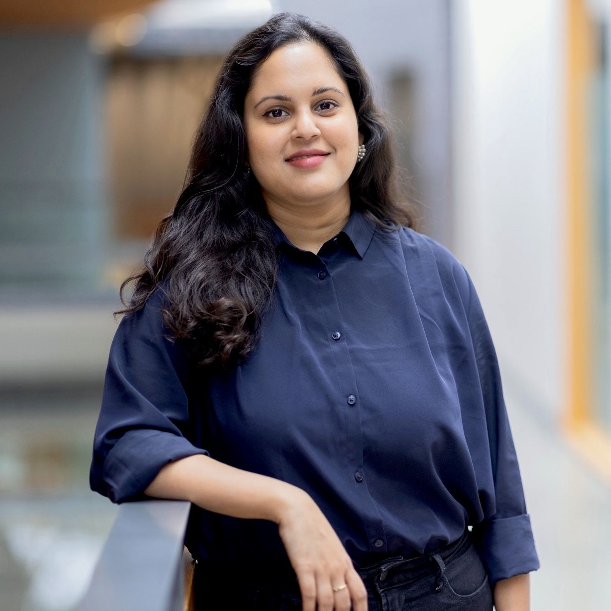
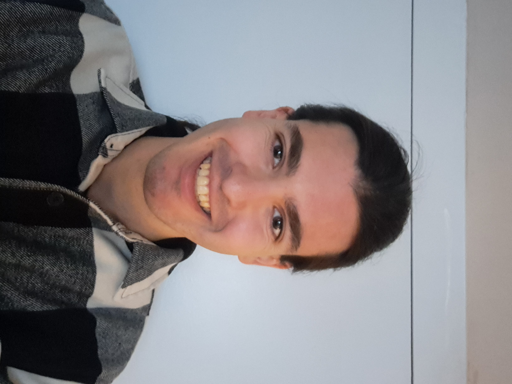
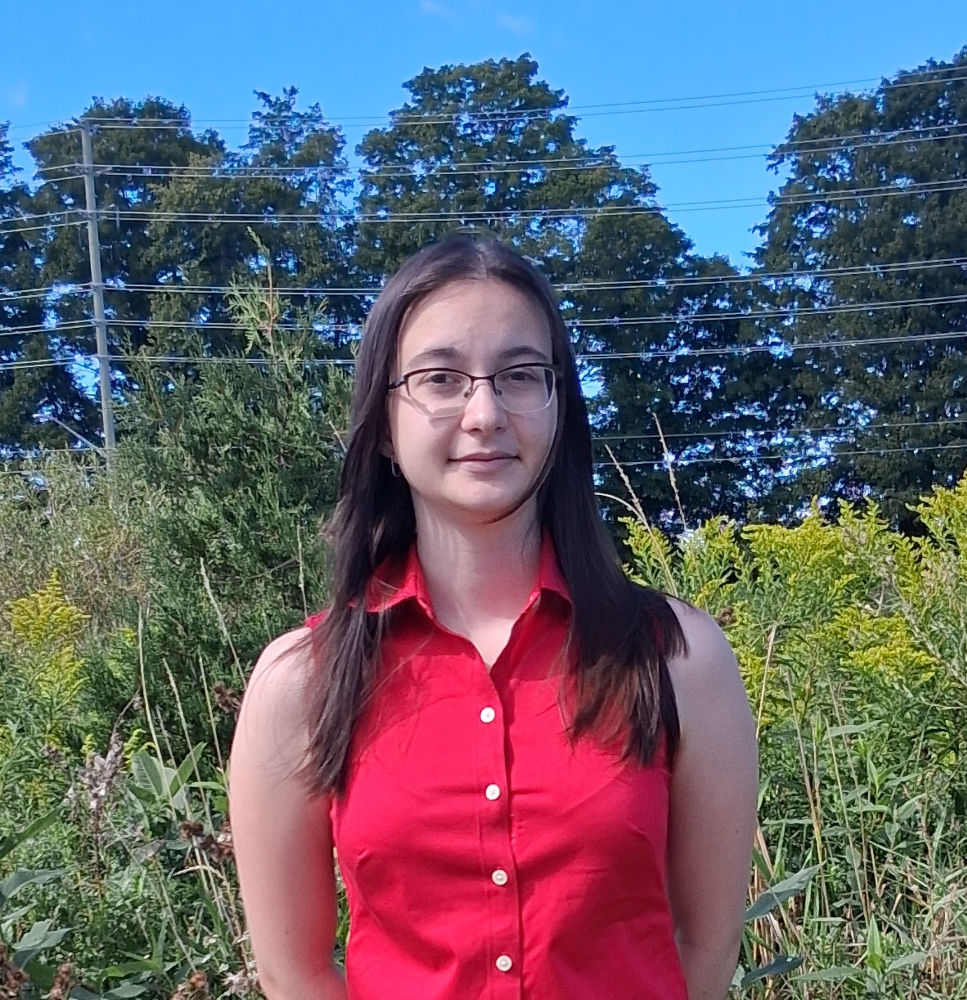
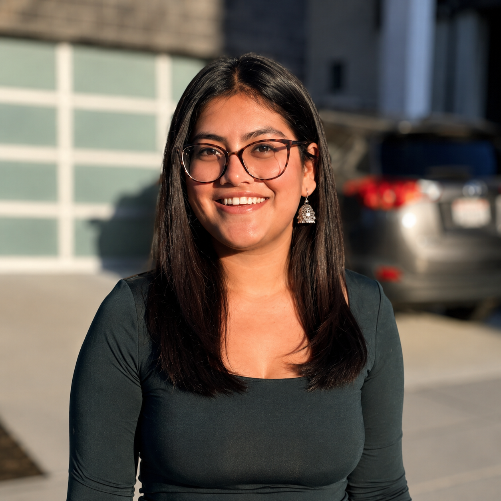
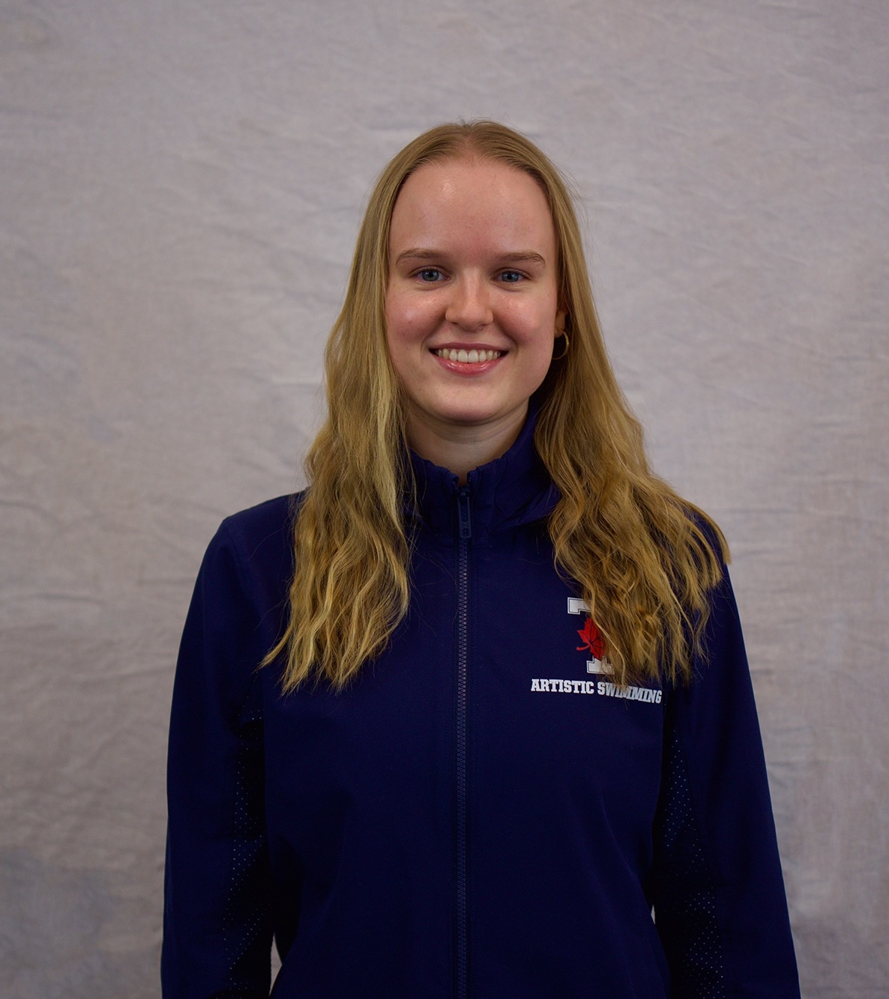
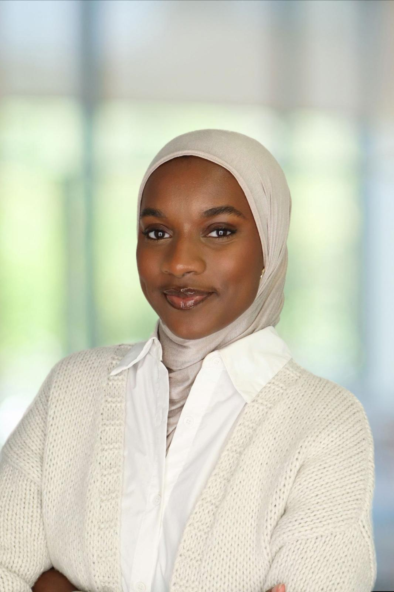

The CLUE Lab studies how people comprehend language — and how that comprehension can be modeled, measured, and put to use — by combining computational tools with the cognitive science of language.
CLUE Lab takes a theory-driven, experimental approach to language science — integrating computational linguistics with the cognitive science of language to examine how humans use and understand language, and to explain what our models reveal.

Dr. Shohini Bhattasali is an Assistant Professor in the Department of Language Studies at the University of Toronto Scarborough, with a graduate appointments in the Department of Linguistics at the St. George campus. She directs the Computational Linguistics Understanding and Exploration (CLUE) Lab and is part of the broader tri-campus Cognitive Science Research Community , Data Sciences Institute, and Center for South Asian Studies.
Dr. Bhattasali is a linguist whose research lies at the intersection of computational linguistics and neurolinguistics, with a focus on naturalistic comprehension in a variety of languages such as English, Bangla, and Hindi. She integrates computational tools with insights from the cognitive science of language to examine how humans use and understand language in their daily lives. She has published articles in international conference proceedings and top-tier journals such as Language, Cognition, and Neuroscience, Journal of Memory and Language, and Annual Review of Linguistics, and delivered conference presentations at international venues such as Human Sentence Processing, Architectures and Mechanisms of Language Processing, Society for the Neurobiology of Language, and Cognitive Science Society.
Bhattasali has been awarded the Connaught New Researcher Award (2025) and her work has been supported by grants from the Social Sciences and Humanities Research Council (Canada), the Office of Naval Research (US), and Laboratoires d'excellence (France). She completed her AB in Linguistics (Honors) with minors in Computer Science and Chinese from Bryn Mawr College. Thereafter, she received her MA and PhD in Linguistics with a graduate minor in Cognitive Science from Cornell University, where she was supervised by John Hale. Subsequently, she was a postdoc at the University of Maryland's Department of Linguistics and Institute for Advanced Computer Studies, where she primarily worked with Philip Resnik.
For further information, please see this page →
How do humans use and understand language — and how can computational tools help us model that process?
Applying tools from computational linguistics to neuroimaging datasets, we have developed a neurocomputational research program to study natural language comprehension in ecologically valid environments and shown distributed neurofunctional networks in the brain. Building upon previous work, the goal is to expand the scope of language science research by incorporating findings from an understudied language. Given that our current scientific viewpoints about how our brains help us understand language relies on insights from a small pool of languages, investigating diverse languages and how our brains respond differently or similarly to those will challenge and strengthen modern cognitive neuroscience frameworks of language understanding. Through cross-linguistic neuroimaging work, we can gain further insights into the cognitive, linguistic, and neuroanatomical substrates of human language processing. This work is supported by the Connaught New Researcher Award.
We are investigating the linguistic and cognitive capacities of LLMs and ways in which the representations they learn can be leveraged in language science research. The representations learned by LLMs used in contemporary cognitive modeling are currently not fully understood. Gaining insight into these representations will help researchers better understand how to properly deploy these LLMs for cognitive modelling. This work is supported by a SSHRC IDG.
Graduate education across the social sciences and humanities is faced with a skills gap. Computational and statistical skills have become critical for understanding and participating in current research. At the same time, students are demanding transferable skills to boost their hireability, inside and outside academia. This major training problem demands pedagogical innovation. Linguistics, the study of human language, is an increasingly interdisciplinary field at the forefront of this change. Neural networks and other statistical language and speech models are becoming common tools in all areas of linguistics. Experimental approaches to understanding language have also become more methodologically demanding. Yet, for many decades, computational approaches to language were mostly restricted to technological applications (machine translation, speech recognition) and made little contact with the field of linguistics. As a result, linguistics curricula were not designed for these new and demanding methods. Our novel approach has two goals: to create a coherent broad-coverage set of online self-guided course materials in computational linguistics for graduate students with a linguistics background; alongside this, to construct large banks of pedagogical exercises that are meaningful to linguistics students, to allow for high-volume, self-guided practice. By documenting the decisions we make, we aim for our experience to inform similar projects in social sciences and humanities. This work is supported by the UofT School of Graduate Studies' Graduate Education Innovation Fund and is in collaboration with Barend Beekhuizen and Ewan Dunbar.
CLUE Lab is a small, interdisciplinary group of graduate students, undergraduate researchers, and collaborators.





CLUE Lab welcomes graduate applicants through the Department of Linguistics, as well as undergraduate research assistants at UTSC. We value strong quantitative or programming skills, curiosity about language and the mind, and thoughtful experimental practice.